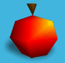

Je
begeleidt Bit Boy Kubi door zijn talrijke avonturen in de verschillende bit-tijdperken.
Op je reis moet je alle levels doorzoeken om de Bit Boy-vriendjes van Kubi
op te sporen.
Doel van het spel
Red al je Bit Boy-vriendjes
in ieder level en versla de boosaardige monsters.
Verdien
bonuspunten door heerlijk fruit te verzamelen en probeer in elke bit-generatie
een recordscore te halen.
Bit-tijdperken
Kubi's avontuur vindt plaats
in diverse tijdperken uit de geschiedenis van computerspellen.
Hij reist door de tijdperken van 4-bit, 8-bit, 16-bit, 32-bit en
64-bit tot
hij uiteindelijk terugkeert naar het tijdperk
van 128-bit.
Als je al je vriendjes hebt gered in een
bepaald tijdperk, krijg je in het hoofdmenu via de tijdreis
toegang tot de volgende generatie.
Recordscores
Het
belangrijkste doel van het spel is om in elke bit-generatie een
recordscore te halen.
De allerbeste scores voor iedere
generatie worden in het titelscherm getoond.
Bewijs dus dat je een echte hardcore gamer bent en knok jezelf
omhoog!
Warp-modus
Als
je een bit-generatie hebt voltooid, kun je de Warp-modus voor deze generatie
selecteren. In de erg lastige Warp-modus moet je zoveel mogelijk
tijddiamanten verzamelen.
Je
kunt hier geen monsters doden en als je door een monster wordt geraakt,
word je onmiddellijk getransporteerd naar het volgende level. Of je dat nu
wilt of niet!


 Als
je een bit-generatie hebt voltooid, kun je de Warp-modus voor deze generatie
selecteren. In de erg lastige Warp-modus moet je zoveel mogelijk
tijddiamanten verzamelen.
Als
je een bit-generatie hebt voltooid, kun je de Warp-modus voor deze generatie
selecteren. In de erg lastige Warp-modus moet je zoveel mogelijk
tijddiamanten verzamelen. Je
kunt hier geen monsters doden en als je door een monster wordt geraakt,
Je
kunt hier geen monsters doden en als je door een monster wordt geraakt,